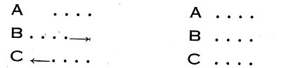

Görülüyor ki, Sokrates’in bizzat kendi varlığı hakkındaki bilgiyi kuşatan, inanç konusu olan “bilinmez” âlemi,[56] Kant’da noumena halini alıyor. Kant; ahlakı, sanatı, dini, bilgi üstündeki bu noumenal ve mutlak varlığa, inanmaya bağlamaktadır. Kant, noumena’nın öznel kısmına ve akıl edilir özüne vazife şeklindeki şartsız ve kategorik emirle ulaşabileceğimizi göstermiş, yani bir “ahlak metafiziği” yapmıştı. Halbuki asıl noumena, ideal ve nesnel varlıktır. Kant varlığı tümelliği ile kavrayacak hiçbir araç teklif etmedi. Yani bir tabiat metafiziği yapmadı;[57] fakat Kant’ın yolundan gidenlerden bir kısmı aklın yapamadığı işi başka bir vasıta ile elde etmeye, yani akıldan “üstün” bir vasıtayla noumena’ya ulaşarak metafizik kurmaya çalıştılar. Bunlara göre zekâ, zihin, akıl eğer varlığın özüne nüfuz edemiyorsa, ruhumuzun başka bir yetisi ona pekiyi nüfuz edebilir. Bu yeni çığırın düşünürleri Schopenhauer, Schelling ve Bergson’dur.
Schopenhauer’a göre “Âlem benim tasavvurumdur.” Bundan dolayı o olduğu gibi değil, ancak bana göründüğü gibi idrak edilebilir. Fakat zihnimden ayrı bütün varlığa yaygın önce bedenimde doğrudan doğruya kavradığım, sonra bitki, hayvan, insan âlemlerinde kıyas yolu ile gördüğüm bir güç vardır ki, bu “irade”dir. İrade ile varlığa nüfuz etmek mümkündür. Çünkü asıl varlığın özü “kör irade”den ibarettir.
Schelling’e göre zihin mantıki düşünce ile varlığı olduğu gibi kavrama gücünde değildir; çünkü zihin sürekli ve sonsuz olan âlemi süreksiz ve kanıtlamalı yani araçlı olarak tanır. Bundan dolayı onu parçalar ve özünü bozar. Zihinle kazandığımız bilgi vasıtalıdır (médiat). Bu sebepten şeylerin aslına uygun değildir. Fakat şeylerin aslını, yani tümel varlığı, doğrudan doğruya vasıtasız olarak (immédiat) kavrayacak başka bir yetiye sahibizdir ki, bu Descartes’ın, Kant’ın anladıklarından farklı bir anlamda zihni sezgidir (Intellektuelle Anschauung); zihni sezgi ile kavranan bütün tabiat Ruh ile Gerçek’in aynılığı halindeki Mutlak Varlık’tır. Fakat bu bilgi ilmin değil, sanatın ve dinin bilgisini verir. Schopenhauer ve Schelling bilgi dyade’ını kuşatan Aşkın Varlık veya sonsuz dyade’a olan inancı başka başka yönlerden savunmaktadırlar. Birincisi sanat sezgisiyle inancı, ikincisi iradenin terk edilmesi ile inancı birleştiriyor.[58] Bu bağlantıyı Wagner’in başlıca müzikal dramlarında daha somut olarak görüyoruz.
Bergson’a göre zekâ, şeyleri ancak pratik faydaya göre parçalayarak, mekanikleştirerek kavrayabilir. Bundan dolayı zekâ her şeyden önce maddeyi kullanmaya elverişli bir alettir, fakat hayatın, ruhun, asıl varlığın özünü zekâ ile kavramaya imkân yoktur. Çünkü zekâ varlığın bütün bu görünüşlerini ancak onun özünü bozarak, niteliği niceliğe, şiddeti müddete, sürekliyi süreksize indirgeyerek kavrayabilir. Bundan dolayı varlığın süresini (durée) olduğu gibi doğrudan doğruya kavrayacak, zekâ dışında ruhun başka bir yetisine, sezgiye (intuition) başvurmak gerekir. Bergson’un anladığı şekilde sezgi Descartes, Kant, Schelling’in sezgilerinden farklıdır. Burada zihnin hayat ve şuur süresini kendi içinden kavramasından ibaret bir çeşit “iç duyu” anlaşılmaktadır. Fakat onda da öteki filozoflarla ortak cihet, özne-nesne ikiliğini aşan “asıl varlık”la bu mahrem ilginin gündelik bilgilerden farklı oluşudur.
Zamanımız felsefesinde metafizik ile mantık arasındaki birlik kaybolmuştur. İnsan artık varlığa akıl yolu ile nüfuzdan vazgeçmiş görünüyor. Çünkü daha ilkçağda görüldüğü gibi asıl varlık bilinemeyen, bilgiyi aşan ve kuşatan, kendisine bilgiden başka araçlarla nüfuz edilen, kendisi ile aramızda ancak inanç münasebeti olan Mutlak alanıdır. Bilgiyi kuşatan ve temellendiren bu alan olmadıkça, asıl bilgi de açıklanamadan kalır.
Zamanımızda mantıkla metafiziğin kesin ayrılışına karşı (ki bu ayrılış Kant’tan başlar) varlığa nüfuz için zihnin hakikatlerinden başka bir mantık, varlığın akışına uygun yeni bir mantık icat etmek isteyen Hegel’i görüyoruz. Hegel, klasik mantık yerine, bu yeni mantık sayesinde metafiziği yeniden kurmanın mümkün olacağına kani idi. Bu da ona göre dinamik mantık veya diyalektik idi. Fakat tabiat felsefesi, tarih felsefesi gibi varlığın türlü alanlarına tatbike çalıştığı bu diyalektiğin ne derecede başarılı olduğunu mantık bahsinde göreceğiz. Burada yalnızca şunu işaret edelim ki, modern felsefe Hegel’in istediği yönde gelişmedi. Tam tersine metafizikle mantık arasında gittikçe büyüyen ayrılık, böyle bir mantığın kurulması imkânsızlığını, metafiziğin mantıktan bağımsız olarak, akıldışı (irrationel) bir alan olarak yeniden ele alınması gerektiğini gösterdi.
Yeni felsefede bu çığırı açanların başında Bergson olduğunu işaret etmiştim. Ayrı ayrı yönlerde bu yeni çığır gittikçe gelişmektedir. En çok Hegel’in yeni mantığına karşı hücumlar bu sistemin parçalanmasına sebep oldu. Bir kısım yeni Hegelciler mantıklarını son derecede daralttılar, eski mantık kadrosuna sıkıştırdılar (Croce, Hamelin vb). Fakat asıl şiddetli tepki Varlık felsefesini mantıktan tamamen uzaklaştıran Kierkegaard’dan geldi. Ona göre var olmayı (existence) orijinal olarak biz kendimizde, kendi öznelliğimizde kavrarız. Varoluşumuz Allah karşısında kendini inkâr ederek meydana çıkar. İnsani varlık, Aşkın (transcendant) Varlık önündeki yeisten, yokluk şuurundan doğar. Halbuki Nietzsche aynı hükme tamamen başka bir yoldan ulaşıyordu. Ona göre insan ancak Allah’ı inkâr ederek kendi varlığını bulabilir. Varlığımız Aşkın Varlık’ın inkârı ile kazanılmıştır. Biri aşkınlığın sonucu, öteki aşkınlığın inkârı yolundan, fakat her ikisi de aynı yönde yani Aşkın Varlık’la, Allah ile insanın karşılaşmaları yolundan “varoluş”u (existence) elde etmektedirler, öyle ise varoluş felsefesi, müspet veya menfi şekilde daima aşkınlık (transcendance) ile karşı karşıya gelmekten doğuyor. Her ikisinde de metafiziğe “mantıki nüfuz” imkânı tamamen reddedilmiştir. Öteden Max Scheler ve Nicolai Hartmann da “varlık metafiziği” kurmaya çalışmaktadırlar. Onların mantığa karşı aldıkları tavrı burada derinleştirecek değiliz, (çünkü Hartmann’a göre mantık gerçek olmayan, ideal bir varlık alanı teşkil ettiğinden onun tartışması konumuzun dışında kalır.) Ancak her ikisinde de varlığın akıldışı (irrationel) özü üzerinde ısrar edildiğine işaret etmek gerekir. Max Scheler belki uzaktan Bergson’a ve Pascal’a benzer. Bu tarzda varlığın özünün zekâ ile, mantıkla, ilim procédé’leriyle değil, fakat varlığın çeşitli mertebelerinde duygu gücüne dayanan bir nüfuz ile, onlarla duygudaş olmakla, kendi deyişi ile sympathie ile kavranacağını söylemektedir. Bu kavrayış tarzı ile mutasavvıfların kal yerine hal’i ve zevk’i koymaları ve varlığın ancak zevk ile tadılarak bilineceğini ileri sürmeleri arasında bir ilgi yok mudur? Mutasavvıflar bu özel görüşte (ki buna ezoterik bilgi diyorlar) tatmayan bilmez (men lem yezuk lem ya’ruf) hadisine dayanmaktadırlar (N. Hartmann felsefesi sonuçlarında ötekinden tamamen ayrılmakta ise de burada incelemeye girmiyoruz). Nihayet burada İngiliz metafizikçisi Whitehead ile Alman metafizikçisi K. Jaspers’i de zikretmek isterim (Özellikle bu sonuncusundan ileriki fasıllarda bahsedeceğim).
